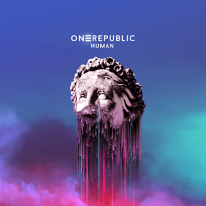
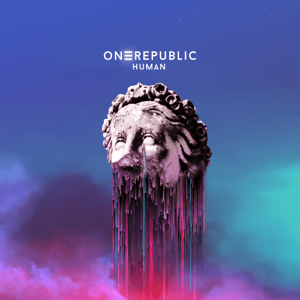

One Republic
One Republic is a talented band composed of 6 members from Colorado Springs. Although compared to many other bands, One Republic has fewer albums, all of them are a pleasure to listen to and are unique in their own ways. Their melodic and catchy music will invoke your senses and bring a feeling of relaxation and relief. With several tracks and albums making it to BillBoard’s top 200 list, there is an enjoyable track for everyone to listen to. Click the album covers below to start discovering and enjoying One Republic. Read more: Wikipedia
Sample Music
 

Good Life (2009)
Didn't I (2020)
Wherever I Go (2016)
I Lived (2013)